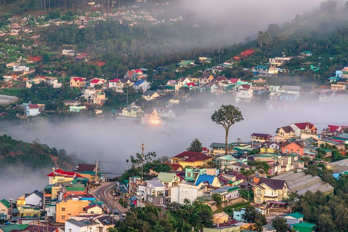
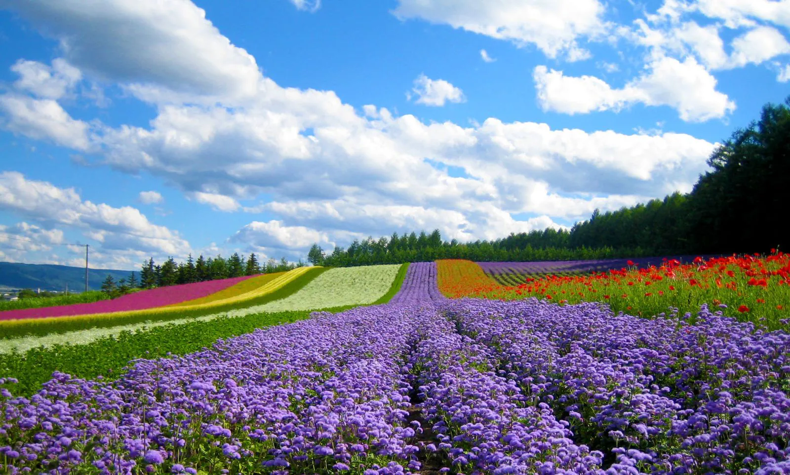
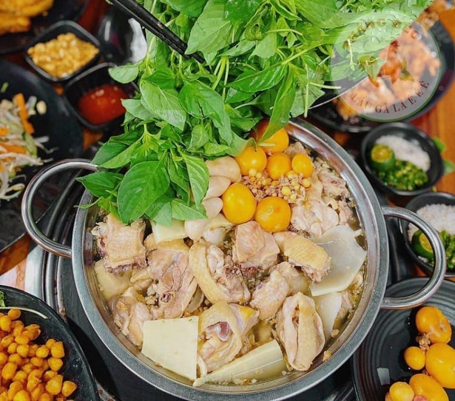
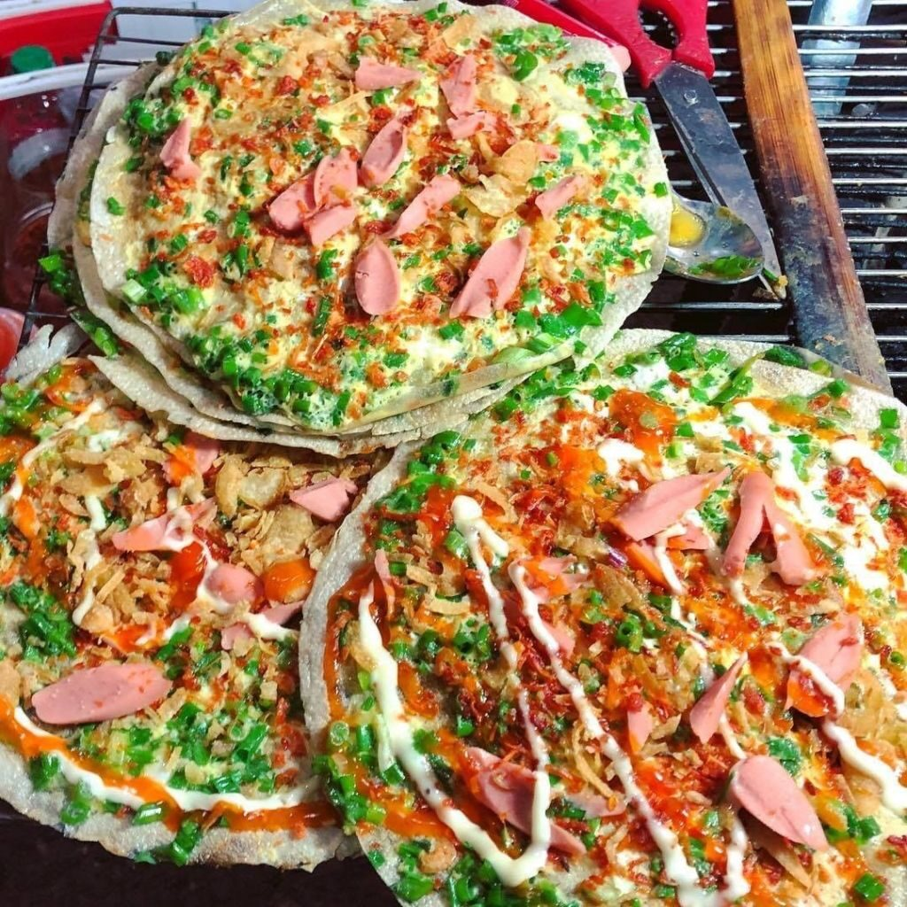
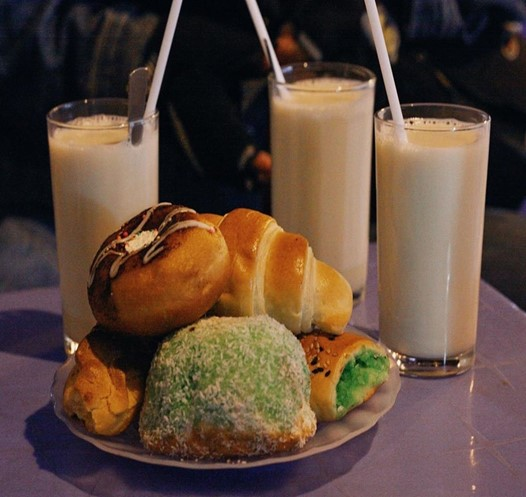
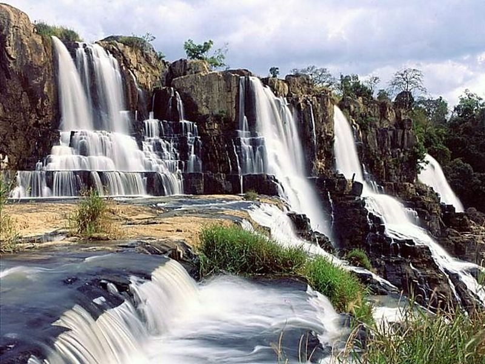
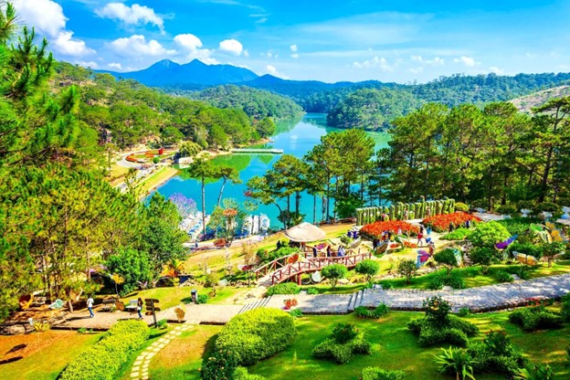
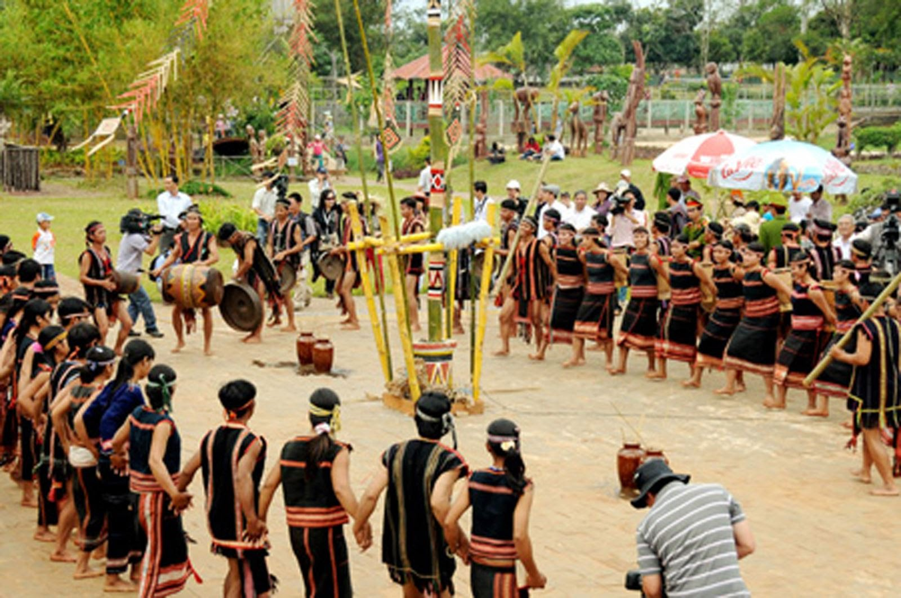
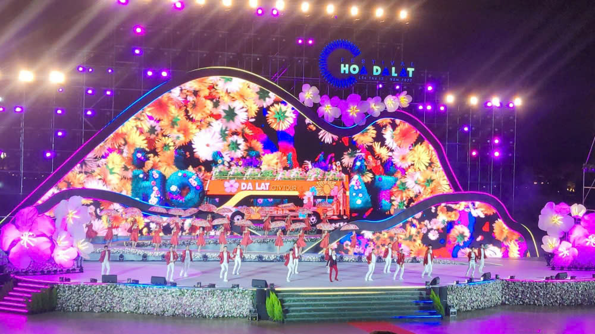
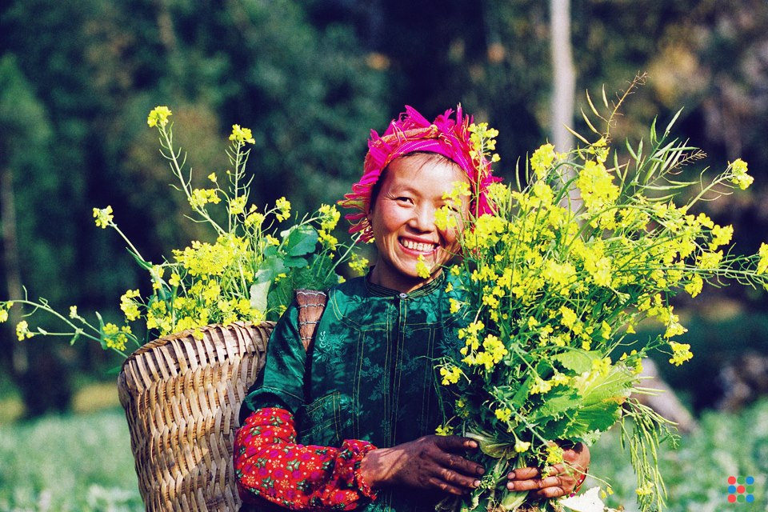

Thành phố ngàn hoa, nơi hội tụ khí hậu, ẩm thực, văn hóa và con người tuyệt vời
Đà Lạt nổi tiếng với khí hậu ôn hòa, cảnh quan thiên nhiên đẹp và không khí trong lành. Với khí hậu mát mẻ quanh năm, Đà Lạt còn được mệnh danh là "thành phố ngàn hoa" hay "tiểu Paris".
Bởi điều kiện khí hậu như thế, thành phố này còn là trung tâm trồng trọt hoa và rau quả của cả nước, với nhiều loài hoa đặc sắc như hoa cẩm tú cầu, hoa hồng, hoa ly và mai anh đào, tạo nên một cảnh quan sắc màu suốt bốn mùa.
Các món ăn tại đây không chỉ ngon mà còn thể hiện sự kết hợp tinh tế giữa các nguyên liệu tươi ngon từ nông sản địa phương, mang đậm hương vị vùng cao. Tiêu biểu như:
1. Lẩu gà lá é
2. Bánh tráng nướng
3. Sữa đậu nành nóng
Đà Lạt có nhiều danh lam thắng cảnh hấp dẫn, từ những hồ nước thơ mộng đến các đỉnh núi cao. Điển hình như:
1. Hồ Xuân Hương
2. Thác Dalanta
3. Thung lũng tình yêu
Văn hóa ở Đà Lạt mang đậm nét truyền thống của các dân tộc anh em, đặc biệt là người K'Ho, người Churu và người Kinh. Các lễ hội, như lễ hội Cồng Chiêng Tây Nguyên, là dịp để du khách trải nghiệm các điệu múa, nhạc và trang phục truyền thống.
1. Lễ hội Cồng Chiêng
2. Lễ hội hoa
Con người Đà Lạt nổi tiếng với sự hiếu khách và thân thiện. Đà Lạt, với sự giao hòa giữa các nền văn hóa, luôn chào đón du khách đến khám phá và trải nghiệm.
